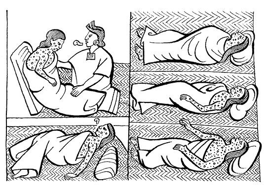
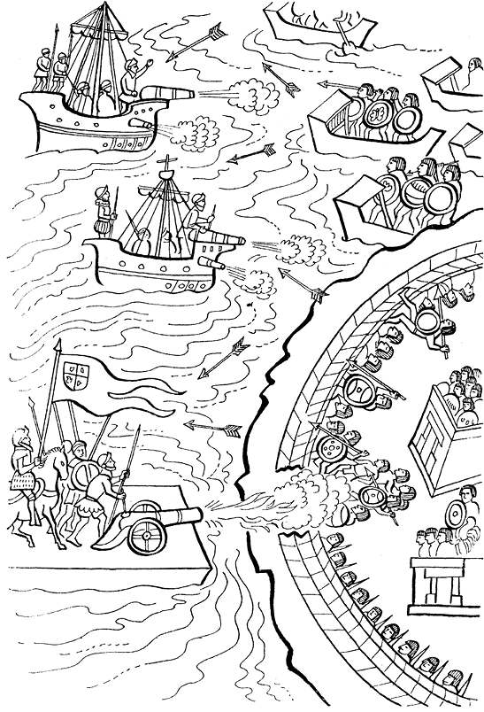
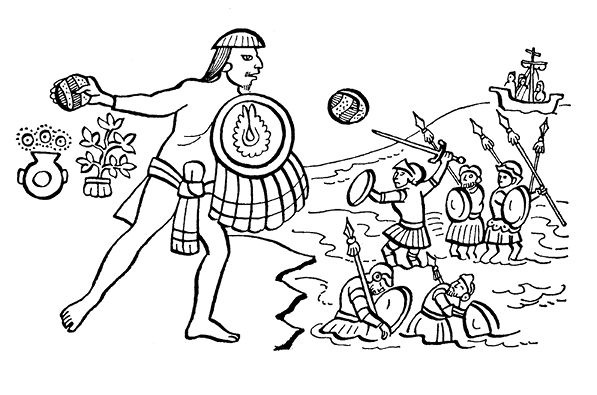

阿兹特克帝国驻华使馆
目录 |
第十一章 墨西哥－特诺奇蒂特兰被围
导 言
几个印第安目击者向我们介绍了伟大的阿兹特克都城被围时的情况：西班牙人在惊慌中恢复过来，在他们的盟友特拉斯卡拉人的帮助下又打了回来。他们疯狂地向墨西哥-特诺奇蒂特兰发动攻击。 这里引用的资料来自萨阿贡实情提供者。开始墨西卡人相信西班牙人不再回来了，于是节日又准备以古老的方式继续进行。古伊特拉瓦克被选为伟大的特拉托阿尼，是继惨死的蒙泰古祖玛之后的新国王。 此时新的灾难很快降临。在居民中蔓延着一种大瘟疫，被称为乌衣扎乌阿特，或乌衣克克利兹特里，就是现在我们通常所说的天花，当时美索美洲还没有这种病，新国王古伊特拉瓦克后来就死于这种瘟疫。正在此时，西班牙人出现在特斯科科方向，企图在特拉克潘安营扎寨。 印第安人目击者向我们极为详细地讲述了西班牙人如何从他们乘坐的双桅船向我们进攻。印第安人的资料还叙述了科尔特斯的士兵如何登陆、墨西卡人的最后反应以及西班牙人如何打入都城中心地带。由于伟大的首都被围困，特诺奇蒂特兰人便向特拉特洛尔克转移，在那里他们集聚，准备战斗。这里选用的印第安资料还刻画了墨西哥首领特奇拉卡特辛的英雄形象，他在西班牙人的攻击面前表现了大无畏的精神。
西班牙人逃跑后墨西哥人的态度
西班牙人逃跑后，人们都以为他们永远不会再回来了，永远不会再回头。于是他们开始打扫神庙，把灰尘和垃圾清走，对神庙进行修理和装饰。 不久，乌依·特库依尔乌依特尔1节到了，在这以后20天2中墨西哥人进行了庆祝活动。 所有神祇的替身3都被装扮起来，给他们穿上插着克查尔羽毛的衣服。 给他们戴上项链和绿松石面具。在内衣外面穿上克查尔羽毛编织的圣衣（也有用黄色鹦鹉羽毛或老鹰羽毛编织的圣衣）。所有这些衣服都由几个重要的王子保存……
瘟疫袭击墨西哥人 西班牙人离开墨西哥、尚未准备好报复我们之际，传染病在我们中间爆发，这是一次巨大的瘟疫，它是从特佩乌依特尔月4开始的。瘟疫不断蔓延，很多人都成了它的牺牲品。有些人全身出满痘疹，痘疹出在脸上，出在头上，出在胸部。  这是一种杀伤力极强的传染病，死了很多人。染病后，病人走不动路，只能平躺在床上，一动都不能动，脖颈不能转动，全身也不能挪动，更不能翻身，只能瘫在床上，稍稍一动便痛得大声喊叫。这种出痘的病让人最后全身布满脓血而死。 许多人染病而死，但不少人却是饿死的：他们被活活饿死，因为谁也没有能力去照料他们。 有人远远用火烧一些病人的痘疹，这并没加重病人的痛苦，也没促使病人死亡。 幸存者因此毁了容，脸上全是麻子，也有人成了瞎子，什么也看不见了。 瘟疫猖狂了六十天，这是黑暗的六十天。它开始在瓜特兰出现并蔓延开来，传到查尔克时严重程度减弱，但并没有全部消失。 疫病在众神降临节开始，在举旗节结束，那时墨西哥武士们的脸上已经见不到痘疹。
西班牙人再次出现 但是，此时情况有变。西班牙人正从特斯科科旁边的瓜乌蒂特兰向这里进军。他们在特拉克潘扎寨，并在那里瓜分了土地。 通向特拉特洛尔克的沿途的土地都分给了佩特罗·德·阿尔瓦拉多。但是，这位侯爵却向克尤瓦坎行军。他要把从阿卡奇南克到特诺奇蒂特兰一路的土地都归他所有。 侯爵很清楚特诺奇蒂特兰的首领十分勇敢。 在特拉特洛尔克南部的阿里索斯门，第一场战斗开始了。 从那里他们又扑向诺诺瓦尔克：墨西哥武士们一直尾随追击，没有一人牺牲。 西班牙人又返了回来，武士们在船上攻击他们，向他们投掷飞镖，西班牙人纷纷倒地，中镖而亡。 但很快侯爵沿着通向阿卡奇南克的道路向特诺奇蒂特兰扑去，在阿卡奇南克西班牙人又驻扎下来，在那里打了几仗，墨西哥人终于不敌而败。  双桅船围城（佛罗伦萨抄本）
西班牙人乘双桅船发动进攻
当时从特斯科科驶来十二艘船，全都集中在阿卡奇南克，不久阿尔瓦拉多侯爵也到了那里。 接着，他去探路看如何能进到城里，看看哪几条水道可直接进入，远还是近，不远的水道是否容易搁浅等。 有些水道过于弯曲，船进不去，只有两条船能从索洛克直接进入另外的水道。 西班牙人相互表示决心，发誓要打败墨西哥人，消灭他们。 西班牙人排成一行，安置上大炮，升起帆布旗子，显得不慌不忙。同时，他们又敲起鼓，吹起喇叭、笛子和号角，嘴里还不断吹着口哨。 两艘帆船慢慢划了过来，他们只沿着水道一侧划行，另一侧没船过来，因为岸上有房屋5。 接着西班牙人登上陆地继续前进，搏斗开始了。双方都有伤亡，都有人被俘。 索基雅潘人看到特诺奇蒂特兰人之后，感到恐惧，开始逃亡。孩子们流离失所，普通百姓四处逃散，哭声一片。 有小船的人把孩子放在船上，努力向前划行，他们什么东西都没带，吓得抛下了一切，连他们的小小家园也丢弃不顾了。 但是我们的敌人却抢走了一切，他们把原先抢来的东西放在包袱里，再把沿途所有值钱的东西都抢走，连毯子、被子、斗篷都带走，战旗、战鼓、长鼓都席卷而去。 特拉特洛尔克人坐船在索基雅潘河中进行了抵抗。 当西班牙人到达索洛克，遇到一面城墙挡住去路，西班牙人用大炮进行了轰击。 第一炮没有将它轰倒，第二炮大墙裂开，第三炮城墙终于轰然坍塌。第四炮过后，城墙被炸成了一片废墟。 西班牙人的两艘大船碰到了用盾牌加固的小船。双方在水上展开了战斗。大炮被安置在船头，瞄准了小船集中的地方，而小船又由于拥挤在一起，行动不便。西班牙人放炮，很多印第安人在炮击下坠入河里丢掉性命。 铁箭也发挥了威力，中箭人发出最后一息，当即死亡，一个也没跑掉。
墨西卡人的反抗
但是，当墨西哥人看到并注意到大炮或火绳枪是直线射击之后，他们就不再走直线，而是之字形来回穿梭。他们尽量溜边走，避开正面。 墨西哥人一看到西班牙人要发射大炮，便趴在地上，双手紧抓泥土。 接着武士们纷纷躲到房子里，大街上空无一人，就像进入了无人区。 不久，他们逃到乌伊特奇兰，那里也矗立着一座高墙，在高墙的掩护下他们有秩序地撤退。
西班牙人登陆
在离乌伊奇特兰不远处，双桅帆船抛锚停船，西班牙人开始安置大炮。 之前，他们一直尾随墨西哥人的小船，当驶到离小船很近的地方时，他们却突然向近旁的住房扑去。 西班牙人安置好大炮，开始向城墙猛烈轰击，城墙出现裂痕，接着后墙被轰开。第二次炮击之后，城墙分几段坍塌，留下豁口。 道路已经通畅，城墙下的墨西哥武士惊慌失措，四处逃散。 西班牙人用石头、土砖甚至木棍把水道填平，以阻止渠水通过。 因此，大约十人骑马并行就得以穿过原来的水道到达对岸，接着他们又返回，再掉头，然后再回来靠边前进。紧接着第二批人骑马随第一批人马沿同一条道路来到对岸。 此前有几个特拉特洛尔克人匆匆进入蒙泰古祖玛住过的宫廷。只见他们很快又惊慌地跑出来，一不小心撞上了骑马的人。一个骑马人用剑刺向特拉特洛尔克人。 一个人受伤倒地，但手里还紧握骑兵的长矛。他的朋友们赶到，从西班牙人手里夺下了长矛，顺势将他四脚朝天摔倒在地。西班牙人倒地之后被他们一顿暴打，又被割去头颅，最终一命呜呼。 西班牙人于是一致行动起来，他们携带大炮抵达了“鹰门”，并把大炮放在“鹰门”上。 此地叫“鹰门”是因为那里有一只石雕的鹰，又高又大，有如一只豹子。在另一个地方可看到一只石雕的舔蜜大熊。 此外，那里还有两排石柱，墨西哥武士虽然躲在石柱后面，但也没能全部保住性命。 还有的武士躲到公共房屋的平台上，但是也没能躲过灾难。 而此时的西班牙人仍不停进攻，在他们发射大炮后，天已黑了下来，天空浓烟滚滚。在石柱后面躲过一劫的人纷纷四处逃亡。平台上的人都跑了下来。众人都跑得远远的。
西班牙人进到城里
西班牙人终于将大炮安置在祭台上。 与此同时，墨西哥人站在维奇洛波奇特利庙上，急急敲起战鼓并点燃烽火，但已经太晚了。 这时有两个西班牙人爬上庙顶，墨西哥人把他们暴打一顿，扔了下去。 在小船上战斗的西班牙官兵此时赶来，连划船的小伙子也一起登上陆地。 接着，西班牙人进入大街小巷进行搜查，并大声喊道： “弟兄们，来呀，接着干！……” 当西班牙人看到有人对抗并追赶他们，就返回来用剑把墨西哥人砍死。 大街上乱作一团，人们慌乱逃跑，不是被流箭射中，就是被敌人截住。逃到索洛克的人才喘了口气，躲过了一劫。然后他们（墨西卡人）从索洛克又往回返。 西班牙人也返回来追击，他们在阿卡奇南克扎营，把原来放在祭台的大炮也丢弃不顾了。 愤怒的墨西哥武士们把大炮拉下来，扔到水里，扔大炮的地方叫特塔马索尔科，意为“石蛤蟆”。
墨西卡人逃到特拉特洛尔克
这时，墨西卡—特诺奇蒂特兰人逃到特拉特洛尔克寻求庇护。 那里到处都能听到哭喊声，妇女们哭天抢地，泪水滂沱。 男人们寻找自己的妻子，有些人还把他们年幼的孩子扛在肩上四处奔走。 只一天，特拉特洛尔克人便不得不放弃了城市。但他们却走向特诺奇蒂特兰，继续战斗。 正在此时，佩德罗·德·阿尔瓦拉多扑向位于诺诺瓦尔克方向的大山伊利亚卡克，即阿里索斯门所在地，但在那里他一事无成。 西班牙人像是遇到了巨石：特拉特洛尔克人个个都是英雄好汉。 在那里的大街上和水道上都发生了战斗，印第安人乘坐用盾牌加固的小船与敌人拼死搏斗。 阿尔瓦拉多人困马乏，只好返回，打算在特拉克潘休整。 第二天，与已经停靠在岸边的两艘双桅帆船的人会合，两部分人停靠在诺瓦尔克农舍附近的河边上。 不久他们从船上下来，沿水陆中间的道路向居民区前进，直抵市中心。 西班牙人所到的任何地区，都弄得一片狼藉，一个人都没能逃走。
墨西卡首领奇拉卡特辛
奇拉卡特辛是位英勇的伟大首领，不久他也赶来。他带着三块石头：三块一般用于建墙的又大又圆的白石头。 一块拿在手里，另外两块再放在盾牌后，接着便一块一块抛向西班牙人，西班牙人只好躲到水里，然后再返回来。 这位奇拉卡特辛是奥托米营6的将领，他的头发也剪得和奥托米人一样。他并没有把敌人放在眼里，尽管他的对手是西班牙人。他根本看不起这些敌人，但敌人却对他感到恐惧。 我们的敌人只要一看到他就会感到惊慌失措，想方设法把他除掉，用剑或火绳枪都可，只要能杀死他。 奇拉卡特辛只需化装一下，就能让敌人认不出来。 有时，他戴上饰品，如唇钉和金耳环，又戴上海螺壳制的项链，只有摘掉这些东西才能看出他是奥托米营的人。 也有的时候他穿上棉盔甲，用一块薄布裹住头掩饰自己。 或是戴上下面有流苏装饰的羽毛头盔，再在后颈裹上一块画着老鹰的破布，这是专门负责把死人扔入火中的人的装扮。 这时他还要戴上金晃晃的臂镯，左右臂一边戴一个，同时还在腿上紧紧扎上耀眼的绑带，他做出好像真的要把用作祭品的死人扔到火中的样子。 第二天，西班牙人再次返回。他们乘船向诺诺瓦尔克方向挺进，到达了“雾宫”附近，一起到达的还有步兵，他们都是特拉斯卡拉人和奥托米人。西班牙人狠狠地扑向墨西哥人。 在到达诺诺瓦尔克时又发生了一场战斗。这是一场硬战，武士们不断向敌人进攻，敌人纷纷中箭死亡，横尸遍野。墨西哥人也有很多人牺牲，到处都能听到痛苦的呻吟声。战斗持续了一天一夜。 只有三个人没有后退一步，他们视敌人如草芥，将自己的生命置之度外。 其中之一是特索叶克特辛；第二个是特默克特辛；第三个便是上面提到的奇拉卡特辛。 西班牙人此时精疲力竭，对墨西哥人无可奈何，无法突破墨西哥人的阵地，于是他们便撤了下来，躲到营地歇息。 和西班牙人在一起的还有他们的盟军。7  1 乌依·特库依尔乌依特尔（Huey Tecuílhuitl），墨西哥人历法中“七月”的名称，7月1日人们开始庆祝该节，也是咸盐女神乌依克斯托希瓦特尔（Huixtocíhuatl）的节日。——原注 2 20天是组成一年的18个月中的一个月。一年365天=18×20+5。最后5天叫作“无用日”（nemontemi）。——原注 阿兹特克用于农业的历法：一年18个月，每月20天，最后外加5天，一年共365天。 3 替身，指在节日中扮演各路神祇的人。——原注 4 特佩乌依特尔月（Tepeíhuitl）是阿兹特克历中的第十三个月，相当于现在的9月30日-10月19日。通常在这个月举行山神的节日庆典。 5 可能是由于房屋里有印第安人进行抵抗，所以西班牙人只能沿另一侧划行。 6 正如上文中指出的，“奥托米营”是指墨西哥军队中的一个建制，并非同名的印第安族群。——原注 7 萨阿贡实情提供者，《佛罗伦萨抄本》，第12卷，第29-32章（卡里巴依译本）。——原注 |
|---|